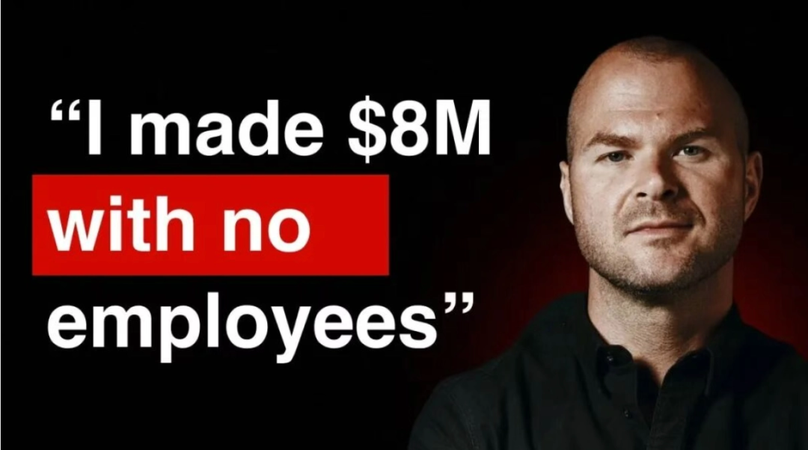
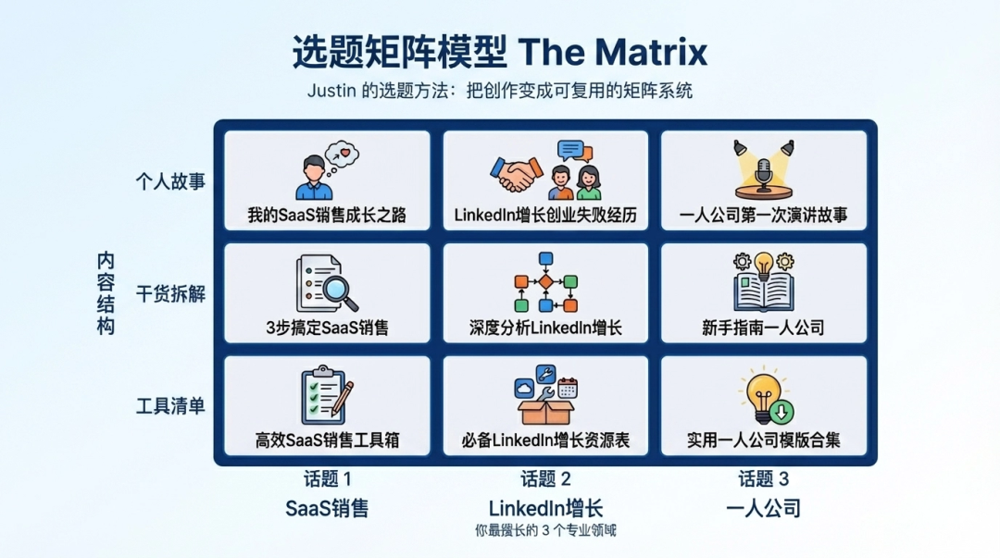
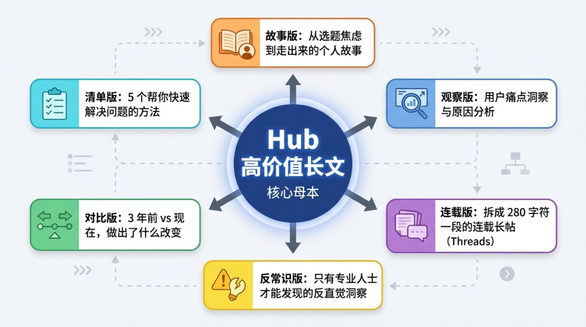

01
X 轴：3 个你最擅长的话题（专业领域）
Y 轴：3 种内容结构（个人故事 / 干货拆解 / 工具清单）

Hub（核心母本）= 每周写 1 篇深度长文
Spoke（切片分发）= 把这篇长文拆成多种风格分发
故事版——讲自己当初怎么从选题焦虑中走出来 观察版——找到的用户痛点并分析原因 连载版——拆成 280 字符一段的连载长帖（Threads） 反常识版——只有专业人士才能发现的反直觉的洞察 对比版——3 年前 vs 现在，做出了什么改变 清单版——5 个帮你快速解决问题的方法 
02
做内容这件事，表面比谁写得好，底层比谁的系统更稳。
你不需要成为 Justin Welsh，你只需要： 一套适合你的内容系统 + AI 帮你执行。
我正在搭建一个免费社群，专门聊「AI系统 × 个人IP」——里面会定期分享新玩法、系统迭代的过程，还有一群同频的超级个体一起交流。
👇 想加入的，备注「AI赋能」，我拉你进来一起玩～